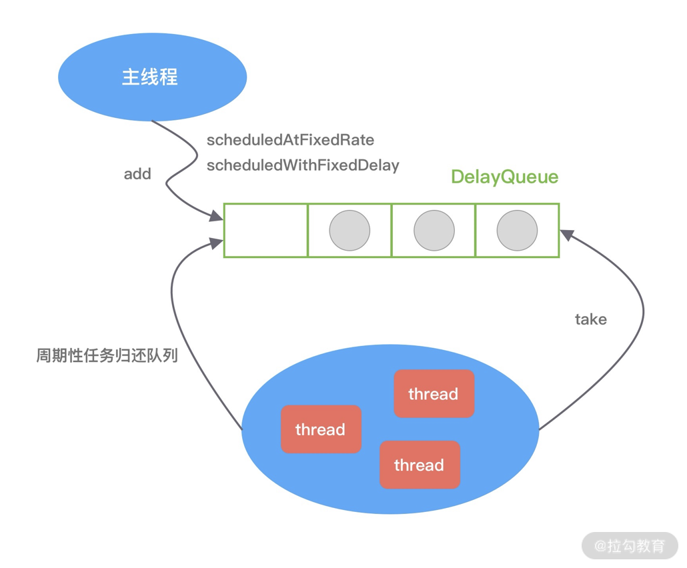
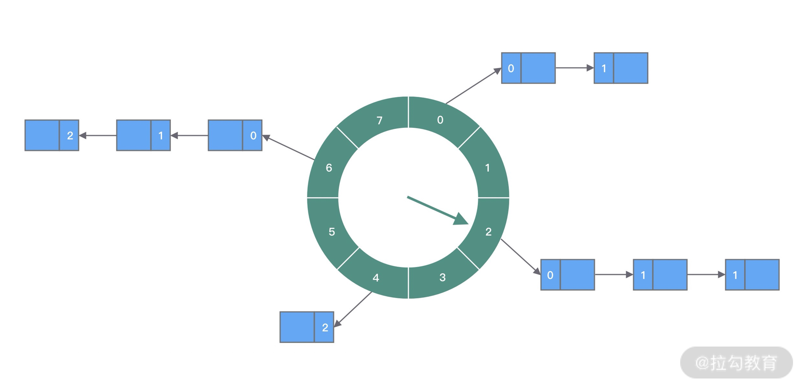
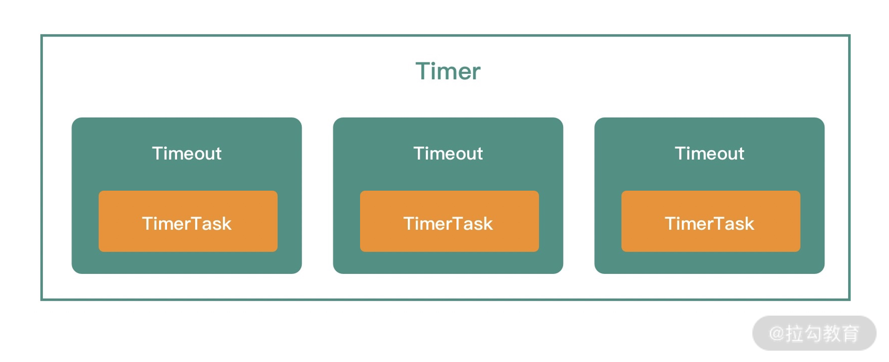
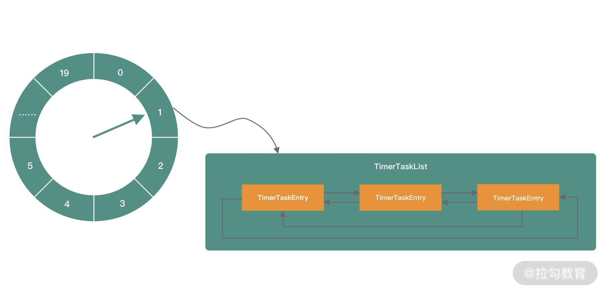
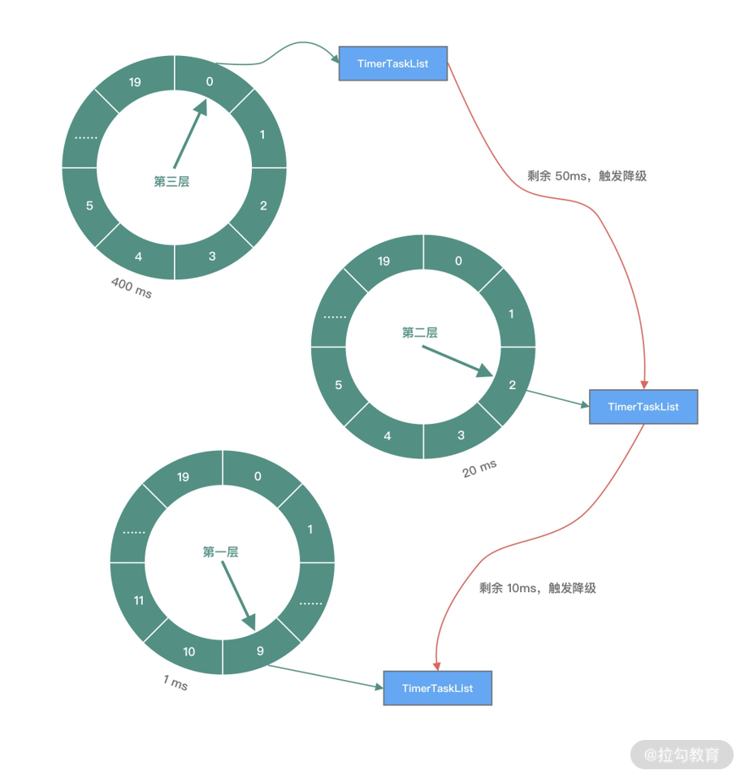

- 00 学好 Netty，是你修炼 Java 内功的必经之路.md.html
- 01 初识 Netty：为什么 Netty 这么流行？.md.html
- 02 纵览全局：把握 Netty 整体架构脉络.md.html
- 03 引导器作用：客户端和服务端启动都要做些什么？.md.html
- 04 事件调度层：为什么 EventLoop 是 Netty 的精髓？.md.html
- 05 服务编排层：Pipeline 如何协调各类 Handler ？.md.html
- 06 粘包拆包问题：如何获取一个完整的网络包？.md.html
- 07 接头暗语：如何利用 Netty 实现自定义协议通信？.md.html
- 08 开箱即用：Netty 支持哪些常用的解码器？.md.html
- 09 数据传输：writeAndFlush 处理流程剖析.md.html
- 10 双刃剑：合理管理 Netty 堆外内存.md.html
- 11 另起炉灶：Netty 数据传输载体 ByteBuf 详解.md.html
- 12 他山之石：高性能内存分配器 jemalloc 基本原理.md.html
- 13 举一反三：Netty 高性能内存管理设计（上）.md.html
- 14 举一反三：Netty 高性能内存管理设计（下）.md.html
- 15 轻量级对象回收站：Recycler 对象池技术解析.md.html
- 16 IO 加速：与众不同的 Netty 零拷贝技术.md.html
- 17 源码篇：从 Linux 出发深入剖析服务端启动流程.md.html
- 18 源码篇：解密 Netty Reactor 线程模型.md.html
- 19 源码篇：一个网络请求在 Netty 中的旅程.md.html
- 20 技巧篇：Netty 的 FastThreadLocal 究竟比 ThreadLocal 快在哪儿？.md.html
- 21 技巧篇：延迟任务处理神器之时间轮 HashedWheelTimer.md.html
- 22 技巧篇：高性能无锁队列 Mpsc Queue.md.html
- 23 架构设计：如何实现一个高性能分布式 RPC 框架.md.html
- 24 服务发布与订阅：搭建生产者和消费者的基础框架.md.html
- 25 远程通信：通信协议设计以及编解码的实现.md.html
- 26 服务治理：服务发现与负载均衡机制的实现.md.html
- 27 动态代理：为用户屏蔽 RPC 调用的底层细节.md.html
- 28 实战总结：RPC 实战总结与进阶延伸.md.html
- 29 编程思想：Netty 中应用了哪些设计模式？.md.html
- 30 实践总结：Netty 在项目开发中的一些最佳实践.md.html
- 31 结束语 技术成长之路：如何打造自己的技术体系.md.html
21 技巧篇：延迟任务处理神器之时间轮 HashedWheelTimer
Netty 中有很多场景依赖定时任务实现，比较典型的有客户端连接的超时控制、通信双方连接的心跳检测等场景。在学习 Netty Reactor 线程模型时，我们知道 NioEventLoop 不仅负责处理 I/O 事件，而且兼顾执行任务队列中的任务，其中就包括定时任务。为了实现高性能的定时任务调度，Netty 引入了时间轮算法驱动定时任务的执行。时间轮到底是什么呢？为什么 Netty 一定要用时间轮来处理定时任务呢？JDK 原生的实现方案不能满足要求吗？本节课我将一步步为你深入剖析时间轮的原理以及 Netty 中是如何实现时间轮算法的。
说明：本文参考的 Netty 源码版本为 4.1.42.Final。
定时任务的基础知识
首先，我们先了解下什么是定时任务？定时器有非常多的使用场景，大家在平时工作中应该经常遇到，例如生成月统计报表、财务对账、会员积分结算、邮件推送等，都是定时器的使用场景。定时器一般有三种表现形式：按固定周期定时执行、延迟一定时间后执行、指定某个时刻执行。
定时器的本质是设计一种数据结构，能够存储和调度任务集合，而且 deadline 越近的任务拥有更高的优先级。那么定时器如何知道一个任务是否到期了呢？定时器需要通过轮询的方式来实现，每隔一个时间片去检查任务是否到期。
所以定时器的内部结构一般需要一个任务队列和一个异步轮询线程，并且能够提供三种基本操作：
- Schedule 新增任务至任务集合；
- Cancel 取消某个任务；
- Run 执行到期的任务。
JDK 原生提供了三种常用的定时器实现方式，分别为 Timer、DelayedQueue 和 ScheduledThreadPoolExecutor。下面我们逐一对它们进行介绍。
Timer
Timer 属于 JDK 比较早期版本的实现，它可以实现固定周期的任务，以及延迟任务。Timer 会起动一个异步线程去执行到期的任务，任务可以只被调度执行一次，也可以周期性反复执行多次。我们先来看下 Timer 是如何使用的，示例代码如下。
Timer timer = new Timer();
timer.scheduleAtFixedRate(new TimerTask() {
@Override
public void run() {
// do something
}
}, 10000, 1000); // 10s 后调度一个周期为 1s 的定时任务
可以看出，任务是由 TimerTask 类实现，TimerTask 是实现了 Runnable 接口的抽象类，Timer 负责调度和执行 TimerTask。接下来我们看下 Timer 的内部构造。
public class Timer {
private final TaskQueue queue = new TaskQueue();
private final TimerThread thread = new TimerThread(queue);
public Timer(String name) {
thread.setName(name);
thread.start();
}
}
TaskQueue 是由数组结构实现的小根堆，deadline 最近的任务位于堆顶端，queue[1] 始终是最优先被执行的任务。所以使用小根堆的数据结构，Run 操作时间复杂度 O(1)，新增 Schedule 和取消 Cancel 操作的时间复杂度都是 O(logn)。
Timer 内部启动了一个 TimerThread 异步线程，不论有多少任务被加入数组，始终都是由 TimerThread 负责处理。TimerThread 会定时轮询 TaskQueue 中的任务，如果堆顶的任务的 deadline 已到，那么执行任务；如果是周期性任务，执行完成后重新计算下一次任务的 deadline，并再次放入小根堆；如果是单次执行的任务，执行结束后会从 TaskQueue 中删除。
DelayedQueue
DelayedQueue 是 JDK 中一种可以延迟获取对象的阻塞队列，其内部是采用优先级队列 PriorityQueue 存储对象。DelayQueue 中的每个对象都必须实现 Delayed 接口，并重写 compareTo 和 getDelay 方法。DelayedQueue 的使用方法如下：
public class DelayQueueTest {
public static void main(String[] args) throws Exception {
BlockingQueue<SampleTask> delayQueue = new DelayQueue<>();
long now = System.currentTimeMillis();
delayQueue.put(new SampleTask(now + 1000));
delayQueue.put(new SampleTask(now + 2000));
delayQueue.put(new SampleTask(now + 3000));
for (int i = 0; i < 3; i++) {
System.out.println(new Date(delayQueue.take().getTime()));
}
}
static class SampleTask implements Delayed {
long time;
public SampleTask(long time) {
this.time = time;
}
public long getTime() {
return time;
}
@Override
public int compareTo(Delayed o) {
return Long.compare(this.getDelay(TimeUnit.MILLISECONDS), o.getDelay(TimeUnit.MILLISECONDS));
}
@Override
public long getDelay(TimeUnit unit) {
return unit.convert(time - System.currentTimeMillis(), TimeUnit.MILLISECONDS);
}
}
}
DelayQueue 提供了 put() 和 take() 的阻塞方法，可以向队列中添加对象和取出对象。对象被添加到 DelayQueue 后，会根据 compareTo() 方法进行优先级排序。getDelay() 方法用于计算消息延迟的剩余时间，只有 getDelay <=0 时，该对象才能从 DelayQueue 中取出。
DelayQueue 在日常开发中最常用的场景就是实现重试机制。例如，接口调用失败或者请求超时后，可以将当前请求对象放入 DelayQueue，通过一个异步线程 take() 取出对象然后继续进行重试。如果还是请求失败，继续放回 DelayQueue。为了限制重试的频率，可以设置重试的最大次数以及采用指数退避算法设置对象的 deadline，如 2s、4s、8s、16s ……以此类推。
相比于 Timer，DelayQueue 只实现了任务管理的功能，需要与异步线程配合使用。DelayQueue 使用优先级队列实现任务的优先级排序，新增 Schedule 和取消 Cancel 操作的时间复杂度也是 O(logn)。
ScheduledThreadPoolExecutor
上文中介绍的 Timer 其实目前并不推荐用户使用，它是存在不少设计缺陷的。
- Timer 是单线程模式。如果某个 TimerTask 执行时间很久，会影响其他任务的调度。
- Timer 的任务调度是基于系统绝对时间的，如果系统时间不正确，可能会出现问题。
- TimerTask 如果执行出现异常，Timer 并不会捕获，会导致线程终止，其他任务永远不会执行。
为了解决 Timer 的设计缺陷，JDK 提供了功能更加丰富的 ScheduledThreadPoolExecutor。ScheduledThreadPoolExecutor 提供了周期执行任务和延迟执行任务的特性，下面通过一个例子先看下 ScheduledThreadPoolExecutor 如何使用。
public class ScheduledExecutorServiceTest {
public static void main(String[] args) {
ScheduledExecutorService executor = Executors.newScheduledThreadPool(5);
executor.scheduleAtFixedRate(() -> System.out.println("Hello World"), 1000, 2000, TimeUnit.MILLISECONDS); // 1s 延迟后开始执行任务，每 2s 重复执行一次
}
}
ScheduledThreadPoolExecutor 继承于 ThreadPoolExecutor，因此它具备线程池异步处理任务的能力。线程池主要负责管理创建和管理线程，并从自身的阻塞队列中不断获取任务执行。线程池有两个重要的角色，分别是任务和阻塞队列。ScheduledThreadPoolExecutor 在 ThreadPoolExecutor 的基础上，重新设计了任务 ScheduledFutureTask 和阻塞队列 DelayedWorkQueue。ScheduledFutureTask 继承于 FutureTask，并重写了 run() 方法，使其具备周期执行任务的能力。DelayedWorkQueue 内部是优先级队列，deadline 最近的任务在队列头部。对于周期执行的任务，在执行完会重新设置时间，并再次放入队列中。ScheduledThreadPoolExecutor 的实现原理可以用下图表示。
 以上我们简单介绍了 JDK 三种实现定时器的方式。可以说它们的实现思路非常类似，都离不开任务、任务管理、任务调度三个角色。三种定时器新增和取消任务的时间复杂度都是 O(logn)，面对海量任务插入和删除的场景，这三种定时器都会遇到比较严重的性能瓶颈。因此，对于性能要求较高的场景，我们一般都会采用时间轮算法。那么时间轮又是如何解决海量任务插入和删除的呢？我们继续向下分析。
时间轮原理分析
技术有时就源于生活，例如排队买票可以想到队列，公司的组织关系可以理解为树等，而时间轮算法的设计思想就来源于钟表。如下图所示，时间轮可以理解为一种环形结构，像钟表一样被分为多个 slot 槽位。每个 slot 代表一个时间段，每个 slot 中可以存放多个任务，使用的是链表结构保存该时间段到期的所有任务。时间轮通过一个时针随着时间一个个 slot 转动，并执行 slot 中的所有到期任务。

任务是如何添加到时间轮当中的呢？可以根据任务的到期时间进行取模，然后将任务分布到不同的 slot 中。如上图所示，时间轮被划分为 8 个 slot，每个 slot 代表 1s，当前时针指向 2。假如现在需要调度一个 3s 后执行的任务，应该加入 2+3=5 的 slot 中；如果需要调度一个 12s 以后的任务，需要等待时针完整走完一圈 round 零 4 个 slot，需要放入第 (2+12)%8=6 个 slot。
那么当时针走到第 6 个 slot 时，怎么区分每个任务是否需要立即执行，还是需要等待下一圈 round，甚至更久时间之后执行呢？所以我们需要把 round 信息保存在任务中。例如图中第 6 个 slot 的链表中包含 3 个任务，第一个任务 round=0，需要立即执行；第二个任务 round=1，需要等待 18=8s 后执行；第三个任务 round=2，需要等待 28=8s 后执行。所以当时针转动到对应 slot 时，只执行 round=0 的任务，slot 中其余任务的 round 应当减 1，等待下一个 round 之后执行。
上面介绍了时间轮算法的基本理论，可以看出时间轮有点类似 HashMap，如果多个任务如果对应同一个 slot，处理冲突的方法采用的是拉链法。在任务数量比较多的场景下，适当增加时间轮的 slot 数量，可以减少时针转动时遍历的任务个数。
时间轮定时器最大的优势就是，任务的新增和取消都是 O(1) 时间复杂度，而且只需要一个线程就可以驱动时间轮进行工作。HashedWheelTimer 是 Netty 中时间轮算法的实现类，下面我就结合 HashedWheelTimer 的源码详细分析时间轮算法的实现原理。
Netty HashedWheelTimer 源码解析
在开始学习 HashedWheelTimer 的源码之前，需要了解 HashedWheelTimer 接口定义以及相关组件，才能更好地使用 HashedWheelTimer。
接口定义
HashedWheelTimer 实现了接口 io.netty.util.Timer，Timer 接口是我们研究 HashedWheelTimer 一个很好的切入口。一起看下 Timer 接口的定义：
public interface Timer {
Timeout newTimeout(TimerTask task, long delay, TimeUnit unit);
Set<Timeout> stop();
}
Timer 接口提供了两个方法，分别是创建任务 newTimeout() 和停止所有未执行任务 stop()。从方法的定义可以看出，Timer 可以认为是上层的时间轮调度器，通过 newTimeout() 方法可以提交一个任务 TimerTask，并返回一个 Timeout。TimerTask 和 Timeout 是两个接口类，它们有什么作用呢？我们分别看下 TimerTask 和 Timeout 的接口定义：
public interface TimerTask {
void run(Timeout timeout) throws Exception;
}
public interface Timeout {
Timer timer();
TimerTask task();
boolean isExpired();
boolean isCancelled();
boolean cancel();
}
Timeout 持有 Timer 和 TimerTask 的引用，而且通过 Timeout 接口可以执行取消任务的操作。Timer、Timeout 和 TimerTask 之间的关系如下图所示：
 清楚 HashedWheelTimer 的接口定义以及相关组件的概念之后，接下来我们就可以开始使用它了。
快速上手
通过下面这个简单的例子，我们看下 HashedWheelTimer 是如何使用的。
public class HashedWheelTimerTest {
public static void main(String[] args) {
Timer timer = new HashedWheelTimer();
Timeout timeout1 = timer.newTimeout(new TimerTask() {
@Override
public void run(Timeout timeout) {
System.out.println("timeout1: " + new Date());
}
}, 10, TimeUnit.SECONDS);
if (!timeout1.isExpired()) {
timeout1.cancel();
}
timer.newTimeout(new TimerTask() {
@Override
public void run(Timeout timeout) throws InterruptedException {
System.out.println("timeout2: " + new Date());
Thread.sleep(5000);
}
}, 1, TimeUnit.SECONDS);
timer.newTimeout(new TimerTask() {
@Override
public void run(Timeout timeout) {
System.out.println("timeout3: " + new Date());
}
}, 3, TimeUnit.SECONDS);
}
}
代码运行结果如下：
timeout2: Mon Nov 09 19:57:04 CST 2020
timeout3: Mon Nov 09 19:57:09 CST 2020
简单的几行代码，基本展示了 HashedWheelTimer 的大部分用法。示例中我们通过 newTimeout() 启动了三个 TimerTask，timeout1 由于被取消了，所以并没有执行。timeout2 和 timeout3 分别应该在 1s 和 3s 后执行。然而从结果输出看并不是，timeout2 和 timeout3 的打印时间相差了 5s，这是由于 timeout2 阻塞了 5s 造成的。由此可以看出，时间轮中的任务执行是串行的，当一个任务执行的时间过长，会影响后续任务的调度和执行，很可能产生任务堆积的情况。
至此，对 HashedWheelTimer 的基本使用方法已经有了初步了解，下面我们开始深入研究 HashedWheelTimer 的实现原理。
内部结构
我们先从 HashedWheelTimer 的构造函数看起，结合上文中介绍的时间轮算法，一起梳理出 HashedWheelTimer 的内部实现结构。
public HashedWheelTimer(
ThreadFactory threadFactory,
long tickDuration,
TimeUnit unit,
int ticksPerWheel,
boolean leakDetection,
long maxPendingTimeouts) {
// 省略其他代码
wheel = createWheel(ticksPerWheel); // 创建时间轮的环形数组结构
mask = wheel.length - 1; // 用于快速取模的掩码
long duration = unit.toNanos(tickDuration); // 转换成纳秒处理
// 省略其他代码
workerThread = threadFactory.newThread(worker); // 创建工作线程
leak = leakDetection || !workerThread.isDaemon() ? leakDetector.track(this) : null; // 是否开启内存泄漏检测
this.maxPendingTimeouts = maxPendingTimeouts; // 最大允许等待任务数，HashedWheelTimer 中任务超出该阈值时会抛出异常
// 如果 HashedWheelTimer 的实例数超过 64，会打印错误日志
if (INSTANCE_COUNTER.incrementAndGet() > INSTANCE_COUNT_LIMIT &&
WARNED_TOO_MANY_INSTANCES.compareAndSet(false, true)) {
reportTooManyInstances();
}
}
HashedWheelTimer 的构造函数清晰地列举出了几个核心属性：
- threadFactory，线程池，但是只创建了一个线程；
- tickDuration，时针每次 tick 的时间，相当于时针间隔多久走到下一个 slot；
- unit，表示 tickDuration 的时间单位；
- ticksPerWheel，时间轮上一共有多少个 slot，默认 512 个。分配的 slot 越多，占用的内存空间就越大；
- leakDetection，是否开启内存泄漏检测；
- maxPendingTimeouts，最大允许等待任务数。
下面我们看下 HashedWheelTimer 是如何创建出来的，我们直接跟进 createWheel() 方法的源码：
private static HashedWheelBucket[] createWheel(int ticksPerWheel) {
// 省略其他代码
ticksPerWheel = normalizeTicksPerWheel(ticksPerWheel);
HashedWheelBucket[] wheel = new HashedWheelBucket[ticksPerWheel];
for (int i = 0; i < wheel.length; i ++) {
wheel[i] = new HashedWheelBucket();
}
return wheel;
}
private static int normalizeTicksPerWheel(int ticksPerWheel) {
int normalizedTicksPerWheel = 1;
while (normalizedTicksPerWheel < ticksPerWheel) {
normalizedTicksPerWheel <<= 1;
}
return normalizedTicksPerWheel;
}
private static final class HashedWheelBucket {
private HashedWheelTimeout head;
private HashedWheelTimeout tail;
// 省略其他代码
}
时间轮的创建就是为了创建 HashedWheelBucket 数组，每个 HashedWheelBucket 表示时间轮中一个 slot。从 HashedWheelBucket 的结构定义可以看出，HashedWheelBucket 内部是一个双向链表结构，双向链表的每个节点持有一个 HashedWheelTimeout 对象，HashedWheelTimeout 代表一个定时任务。每个 HashedWheelBucket 都包含双向链表 head 和 tail 两个 HashedWheelTimeout 节点，这样就可以实现不同方向进行链表遍历。关于 HashedWheelBucket 和 HashedWheelTimeout 的具体功能下文再继续介绍。
因为时间轮需要使用 & 做取模运算，所以数组的长度需要是 2 的次幂。normalizeTicksPerWheel() 方法的作用就是找到不小于 ticksPerWheel 的最小 2 次幂，这个方法实现的并不好，可以参考 JDK HashMap 扩容 tableSizeFor 的实现进行性能优化，如下所示。当然 normalizeTicksPerWheel() 只是在初始化的时候使用，所以并无影响。
static final int MAXIMUM_CAPACITY = 1 << 30;
private static int normalizeTicksPerWheel(int ticksPerWheel) {
int n = ticksPerWheel - 1;
n |= n >>> 1;
n |= n >>> 2;
n |= n >>> 4;
n |= n >>> 8;
n |= n >>> 16;
return (n < 0) ? 1 : (n >= MAXIMUM_CAPACITY) ? MAXIMUM_CAPACITY : n + 1;
}
HashedWheelTimer 初始化的主要工作我们已经介绍完了，其内部结构与上文中介绍的时间轮算法类似，如下图所示。

接下来我们围绕定时器的三种基本操作，分析下 HashedWheelTimer 是如何实现添加任务、执行任务和取消任务的。
添加任务
HashedWheelTimer 初始化完成后，如何向 HashedWheelTimer 添加任务呢？我们自然想到 HashedWheelTimer 提供的 newTimeout() 方法。
public Timeout newTimeout(TimerTask task, long delay, TimeUnit unit) {
// 省略其他代码
long pendingTimeoutsCount = pendingTimeouts.incrementAndGet();
if (maxPendingTimeouts > 0 && pendingTimeoutsCount > maxPendingTimeouts) {
pendingTimeouts.decrementAndGet();
throw new RejectedExecutionException("Number of pending timeouts ("
+ pendingTimeoutsCount + ") is greater than or equal to maximum allowed pending "
+ "timeouts (" + maxPendingTimeouts + ")");
}
start(); // 1. 如果 worker 线程没有启动，需要启动
long deadline = System.nanoTime() + unit.toNanos(delay) - startTime; // 计算任务的 deadline
if (delay > 0 && deadline < 0) {
deadline = Long.MAX_VALUE;
}
HashedWheelTimeout timeout = new HashedWheelTimeout(this, task, deadline); // 2. 创建定时任务
timeouts.add(timeout); // 3. 添加任务到 Mpsc Queue
return timeout;
}
private final Queue<HashedWheelTimeout> timeouts = PlatformDependent.newMpscQueue();
newTimeout() 方法主要做了三件事，分别为启动工作线程，创建定时任务，并把任务添加到 Mpsc Queue。HashedWheelTimer 的工作线程采用了懒启动的方式，不需要用户显示调用。这样做的好处是在时间轮中没有任务时，可以避免工作线程空转而造成性能损耗。先看下启动工作线程 start() 的源码：
public void start() {
switch (WORKER_STATE_UPDATER.get(this)) {
case WORKER_STATE_INIT:
if (WORKER_STATE_UPDATER.compareAndSet(this, WORKER_STATE_INIT, WORKER_STATE_STARTED)) {
workerThread.start();
}
break;
case WORKER_STATE_STARTED:
break;
case WORKER_STATE_SHUTDOWN:
throw new IllegalStateException("cannot be started once stopped");
default:
throw new Error("Invalid WorkerState");
}
while (startTime == 0) {
try {
startTimeInitialized.await();
} catch (InterruptedException ignore) {
}
}
}
工作线程的启动之前，会通过 CAS 操作获取工作线程的状态，如果已经启动，则直接跳过。如果没有启动，再次通过 CAS 操作更改工作线程状态，然后启动工作线程。启动的过程是直接调用的 Thread#start() 方法，我们暂且先不关注工作线程具体做了什么，下文再继续分析。
回到 newTimeout() 的主流程，接下来的逻辑就非常简单了。根据用户传入的任务延迟时间，可以计算出任务的 deadline，然后创建定时任务 HashedWheelTimeout 对象，最终把 HashedWheelTimeout 添加到 Mpsc Queue 中。看到这里，你会不会有个疑问，为什么不是将 HashedWheelTimeout 直接添加到时间轮中呢？而是先添加到 Mpsc Queue？Mpsc Queue 可以理解为多生产者单消费者的线程安全队列，下节课我们会对 Mpsc Queue 详细分析，在这里就不做展开了。可以猜到 HashedWheelTimer 是想借助 Mpsc Queue 保证多线程向时间轮添加任务的线程安全性。
那么什么时候任务才会被加入时间轮并执行呢？此时还没有太多信息，接下来我们只能工作线程 Worker 里寻找问题的答案。
工作线程 Worker
工作线程 Worker 是时间轮的核心引擎，随着时针的转动，到期任务的处理都由 Worker 处理完成。下面我们定位到 Worker 的 run() 方法一探究竟。
private final class Worker implements Runnable {
private final Set<Timeout> unprocessedTimeouts = new HashSet<Timeout>(); // 未处理任务列表
private long tick;
@Override
public void run() {
startTime = System.nanoTime();
if (startTime == 0) {
startTime = 1;
}
startTimeInitialized.countDown();
do {
final long deadline = waitForNextTick(); // 1. 计算下次 tick 的时间, 然后sleep 到下次 tick
if (deadline > 0) { // 可能因为溢出或者线程中断，造成 deadline <= 0
int idx = (int) (tick & mask); // 2. 获取当前 tick 在 HashedWheelBucket 数组中对应的下标
processCancelledTasks(); // 3. 移除被取消的任务
HashedWheelBucket bucket =
wheel[idx];
transferTimeoutsToBuckets(); // 4. 从 Mpsc Queue 中取出任务加入对应的 slot 中
bucket.expireTimeouts(deadline); // 5. 执行到期的任务
tick++;
}
} while (WORKER_STATE_UPDATER.get(HashedWheelTimer.this) == WORKER_STATE_STARTED);
// 时间轮退出后，取出 slot 中未执行且未被取消的任务，并加入未处理任务列表，以便 stop() 方法返回
for (HashedWheelBucket bucket: wheel) {
bucket.clearTimeouts(unprocessedTimeouts);
}
// 将还没来得及添加到 slot 中的任务取出，如果任务未取消则加入未处理任务列表，以便 stop() 方法返回
for (;;) {
HashedWheelTimeout timeout = timeouts.poll();
if (timeout == null) {
break;
}
if (!timeout.isCancelled()) {
unprocessedTimeouts.add(timeout);
}
}
processCancelledTasks();
}
}
工作线程 Worker 的核心执行流程是代码中的 do-while 循环，只要 Worker 处于 STARTED 状态，就会执行 do-while 循环，我们把该过程拆分成为以下几个步骤，逐一分析。
- 通过 waitForNextTick() 方法计算出时针到下一次 tick 的时间间隔，然后 sleep 到下一次 tick。
- 通过位运算获取当前 tick 在 HashedWheelBucket 数组中对应的下标
- 移除被取消的任务。
- 从 Mpsc Queue 中取出任务加入对应的 HashedWheelBucket 中。
- 执行当前 HashedWheelBucket 中的到期任务。
首先看下 waitForNextTick() 方法是如何计算等待时间的，源码如下：
private long waitForNextTick() {
long deadline = tickDuration * (tick + 1);
for (;;) {
final long currentTime = System.nanoTime() - startTime;
long sleepTimeMs = (deadline - currentTime + 999999) / 1000000;
if (sleepTimeMs <= 0) {
if (currentTime == Long.MIN_VALUE) {
return -Long.MAX_VALUE;
} else {
return currentTime;
}
}
if (PlatformDependent.isWindows()) {
sleepTimeMs = sleepTimeMs / 10 * 10;
}
try {
Thread.sleep(sleepTimeMs);
} catch (InterruptedException ignored) {
if (WORKER_STATE_UPDATER.get(HashedWheelTimer.this) == WORKER_STATE_SHUTDOWN) {
return Long.MIN_VALUE;
}
}
}
}
根据 tickDuration 可以推算出下一次 tick 的 deadline，deadline 减去当前时间就可以得到需要 sleep 的等待时间。所以 tickDuration 的值越小，时间的精准度也就越高，同时 Worker 的繁忙程度越高。如果 tickDuration 设置过小，为了防止系统会频繁地 sleep 再唤醒，会保证 Worker 至少 sleep 的时间为 1ms 以上。
Worker 从 sleep 状态唤醒后，接下来会执行第二步流程，通过按位与的操作计算出当前 tick 在 HashedWheelBucket 数组中对应的下标。按位与比普通的取模运算效率要快很多，前提是时间轮中的数组长度是 2 的次幂，掩码 mask 为 2 的次幂减 1，这样才能达到与取模一样的效果。
接下来 Worker 会调用 processCancelledTasks() 方法处理被取消的任务，所有取消的任务都会加入 cancelledTimeouts 队列中，Worker 会从队列中取出任务，然后将其从对应的 HashedWheelBucket 中删除，删除操作为基本的链表操作。processCancelledTasks() 的源码比较简单，我们在此就不展开了。
之前我们还留了一个疑问，Mpsc Queue 中的任务什么时候加入时间轮的呢？答案就在 transferTimeoutsToBuckets() 方法中。
private void transferTimeoutsToBuckets() {
// 每次时针 tick 最多只处理 100000 个任务，以防阻塞 Worker 线程
for (int i = 0; i < 100000; i++) {
HashedWheelTimeout timeout = timeouts.poll();
if (timeout == null) {
break;
}
if (timeout.state() == HashedWheelTimeout.ST_CANCELLED) {
continue;
}
long calculated = timeout.deadline / tickDuration; // 计算任务需要经过多少个 tick
timeout.remainingRounds = (calculated - tick) / wheel.length; // 计算任务需要在时间轮中经历的圈数 remainingRounds
final long ticks = Math.max(calculated, tick); // 如果任务在 timeouts 队列里已经过了执行时间, 那么会加入当前 HashedWheelBucket 中
int stopIndex = (int) (ticks & mask);
HashedWheelBucket bucket = wheel[stopIndex];
bucket.addTimeout(timeout);
}
}
transferTimeoutsToBuckets() 的主要工作就是从 Mpsc Queue 中取出任务，然后添加到时间轮对应的 HashedWheelBucket 中。每次时针 tick 最多只处理 100000 个任务，一方面避免取任务的操作耗时过长，另一方面为了防止执行太多任务造成 Worker 线程阻塞。
根据用户设置的任务 deadline，可以计算出任务需要经过多少次 tick 才能开始执行以及需要在时间轮中转动圈数 remainingRounds，remainingRounds 会记录在 HashedWheelTimeout 中，在执行任务的时候 remainingRounds 会被使用到。因为时间轮中的任务并不能够保证及时执行，假如有一个任务执行的时间特别长，那么任务在 timeouts 队列里已经过了执行时间，也没有关系，Worker 会将这些任务直接加入当前HashedWheelBucket 中，所以过期的任务并不会被遗漏。
任务被添加到时间轮之后，重新再回到 Worker#run() 的主流程，接下来就是执行当前 HashedWheelBucket 中的到期任务，跟进 HashedWheelBucket#expireTimeouts() 方法的源码：
public void expireTimeouts(long deadline) {
HashedWheelTimeout timeout = head;
while (timeout != null) {
HashedWheelTimeout next = timeout.next;
if (timeout.remainingRounds <= 0) {
next = remove(timeout);
if (timeout.deadline <= deadline) {
timeout.expire(); // 执行任务
} else {
throw new IllegalStateException(String.format(
"timeout.deadline (%d) > deadline (%d)", timeout.deadline, deadline));
}
} else if (timeout.isCancelled()) {
next = remove(timeout);
} else {
timeout.remainingRounds --; // 未到执行时间，remainingRounds 减 1
}
timeout = next;
}
}
执行任务的操作比较简单，就是从头开始遍历 HashedWheelBucket 中的双向链表。如果 remainingRounds <=0，则调用 expire() 方法执行任务，timeout.expire() 内部就是调用了 TimerTask 的 run() 方法。如果任务已经被取消，直接从链表中移除。否则表示任务的执行时间还没到，remainingRounds 减 1，等待下一圈即可。
至此，工作线程 Worker 的核心逻辑 do-while 循环我们已经讲完了。当时间轮退出后，Worker 还会执行一些后置的收尾工作。Worker 会从每个 HashedWheelBucket 取出未执行且未取消的任务，以及还来得及添加到 HashedWheelBucket 中的任务，然后加入未处理任务列表，以便 stop() 方法统一处理。
停止时间轮
回到 Timer 接口两个方法，newTimeout() 上文已经分析完了，接下来我们就以 stop() 方法为入口，看下时间轮停止都做了哪些工作。
@Override
public Set<Timeout> stop() {
// Worker 线程无法停止时间轮
if (Thread.currentThread() == workerThread) {
throw new IllegalStateException(
HashedWheelTimer.class.getSimpleName() +
".stop() cannot be called from " +
TimerTask.class.getSimpleName());
}
// 尝试通过 CAS 操作将工作线程的状态更新为 SHUTDOWN 状态
if (!WORKER_STATE_UPDATER.compareAndSet(this, WORKER_STATE_STARTED, WORKER_STATE_SHUTDOWN)) {
if (WORKER_STATE_UPDATER.getAndSet(this, WORKER_STATE_SHUTDOWN) != WORKER_STATE_SHUTDOWN) {
INSTANCE_COUNTER.decrementAndGet();
if (leak != null) {
boolean closed = leak.close(this);
assert closed;
}
return Collections.emptySet();
}
try {
boolean interrupted = false;
while (workerThread.isAlive()) {
workerThread.interrupt(); // 中断 Worker 线程
try {
workerThread.join(100);
} catch (InterruptedException ignored) {
interrupted = true;
}
}
if (interrupted) {
Thread.currentThread().interrupt();
}
} finally {
INSTANCE_COUNTER.decrementAndGet();
if (leak != null) {
boolean closed = leak.close(this);
assert closed;
}
}
return worker.unprocessedTimeouts(); // 返回未处理任务的列表
}
如果当前线程是 Worker 线程，它是不能发起停止时间轮的操作的，是为了防止有定时任务发起停止时间轮的恶意操作。停止时间轮主要做了三件事，首先尝试通过 CAS 操作将工作线程的状态更新为 SHUTDOWN 状态，然后中断工作线程 Worker，最后将未处理的任务列表返回给上层。
到此为止，HashedWheelTimer 的实现原理我们已经分析完了。再来回顾一下 HashedWheelTimer 的几个核心成员。
- HashedWheelTimeout，任务的封装类，包含任务的到期时间 deadline、需要经历的圈数 remainingRounds 等属性。
- HashedWheelBucket，相当于时间轮的每个 slot，内部采用双向链表保存了当前需要执行的 HashedWheelTimeout 列表。
- Worker，HashedWheelTimer 的核心工作引擎，负责处理定时任务。
时间轮进阶应用
Netty 中的时间轮是通过固定的时间间隔 tickDuration 进行推动的，如果长时间没有到期任务，那么会存在时间轮空推进的现象，从而造成一定的性能损耗。此外，如果任务的到期时间跨度很大，例如 A 任务 1s 后执行，B 任务 6 小时之后执行，也会造成空推进的问题。
那么上述问题有没有什么解决方案呢？在研究 Kafka 的时候，Kafka 也有时间轮的应用，它的实现思路与 Netty 是存在区别的。因为 Kafka 面对的应用场景是更加严苛的，可能会存在各种时间粒度的定时任务，那么 Kafka 是否有解决时间跨度问题呢？我们接下来就简单介绍下 Kafka 的优化思路。
Kafka 时间轮的内部结构与 Netty 类似，如下图所示。Kafka 的时间轮也是采用环形数组存储定时任务，数组中的每个 slot 代表一个 Bucket，每个 Bucket 保存了定时任务列表 TimerTaskList，TimerTaskList 同样采用双向链表的结构实现，链表的每个节点代表真正的定时任务 TimerTaskEntry。

为了解决空推进的问题，Kafka 借助 JDK 的 DelayQueue 来负责推进时间轮。DelayQueue 保存了时间轮中的每个 Bucket，并且根据 Bucket 的到期时间进行排序，最近的到期时间被放在 DelayQueue 的队头。Kafka 中会有一个线程来读取 DelayQueue 中的任务列表，如果时间没有到，那么 DelayQueue 会一直处于阻塞状态，从而解决空推荐的问题。这时候你可能会问，DelayQueue 插入和删除的性能不是并不好吗？其实 Kafka 采用的是一种权衡的策略，把 DelayQueue 用在了合适的地方。DelayQueue 只存放了 Bucket，Bucket 的数量并不多，相比空推进带来的影响是利大于弊的。
为了解决任务时间跨度很大的问题，Kafka 引入了层级时间轮，如下图所示。当任务的 deadline 超出当前所在层的时间轮表示范围时，就会尝试将任务添加到上一层时间轮中，跟钟表的时针、分针、秒针的转动规则是同一个道理。

从图中可以看出，第一层时间轮每个时间格为 1ms，整个时间轮的跨度为 20ms；第二层时间轮每个时间格为 20ms，整个时间轮跨度为 400ms；第三层时间轮每个时间格为 400ms，整个时间轮跨度为 8000ms。每一层时间轮都有自己的指针，每层时间轮走完一圈后，上层时间轮也会相应推进一格。
假设现在有一个任务到期时间是 450ms 之后，应该放在第三层时间轮的第一格。随着时间的流逝，当指针指向该时间格时，发现任务到期时间还有 50ms，这里就涉及时间轮降级的操作，它会将任务重新提交到时间轮中。此时发现第一层时间轮整体跨度不够，需要放在第二层时间轮中第三格。当时间再经历 40ms 之后，该任务又会触发一次降级操作，放入到第一层时间轮，最后等到 10ms 后执行任务。
由此可见，Kafka 的层级时间轮的时间粒度更好控制，可以应对更加复杂的定时任务处理场景，适用的范围更广。
总结
HashedWheelTimer 的源码通俗易懂，其设计思想值得我们借鉴。在平时开发中如果有类似的任务处理机制，你可以尝试套用 HashedWheelTimer 的工作模式。
HashedWheelTimer 并不是十全十美的，使用的时候需要清楚它存在的问题：
- 如果长时间没有到期任务，那么会存在时间轮空推进的现象。
- 只适用于处理耗时较短的任务，由于 Worker 是单线程的，如果一个任务执行的时间过长，会造成 Worker 线程阻塞。
- 相比传统定时器的实现方式，内存占用较大。